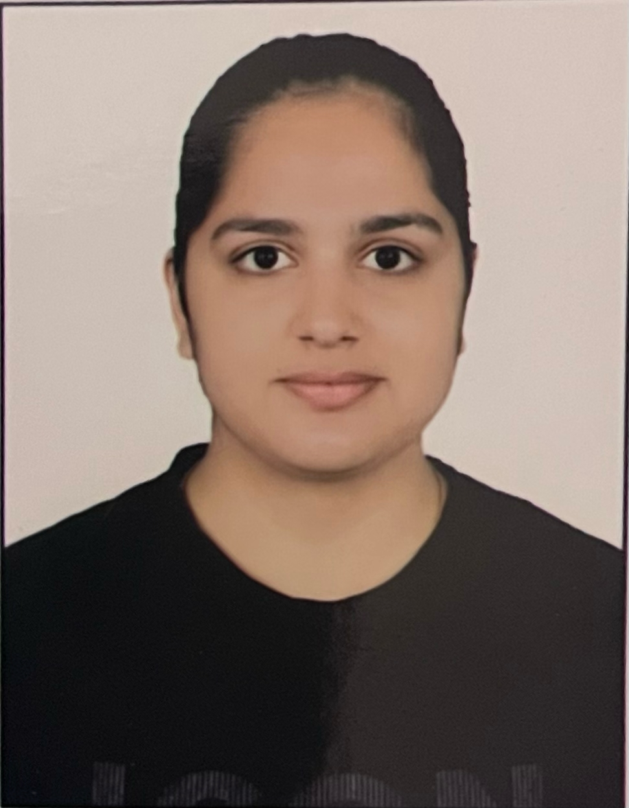

|  |
ANSHIKA CHOUDHARYSTUDENT AT IIS DEEMED TO BE UNIVERSITY I have done my schooling from jayshree periwal high school,now i am pursuing bca. I always had a keen interest in coding and with the help of this course my skills will be developed more.After doing my bachelor's degree, i am aiming for a prestigious university of my master's. |
| YEAR | INSTITUTE | DEGREE | SCORE |
| pursuing | IIS(DEEMED TO BE UNIVERSITY),JAIPUR,RAJASTHAN | BCA | 9.36 CGP |
| 2022 | JAYSHREE PERIWAL HIGH SCHOOL,JAIPUR,RAJASTHAN | CLASS 12 | 79% |
| 2022 | JAYSHREE PERIWAL HIGH SCHOOL,JAIPUR,RAJASTHAN | CLASS 10 | 64% |